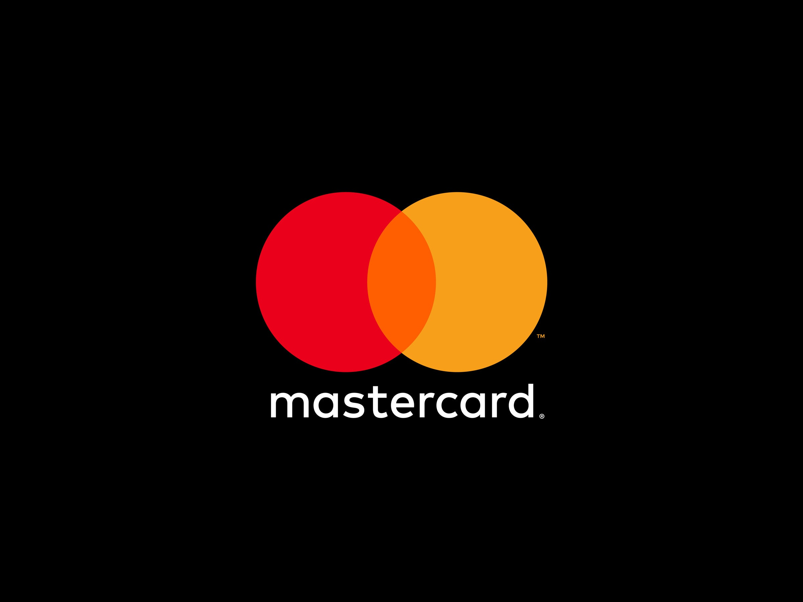

History
The company has a complicated early history. It began at Harvard University in 2003 as Facemash, an online service for students to judge the attractiveness of their fellow students. Because the primary developer, Zuckerberg, violated university policy in acquiring resources for the service, it was shut down after two days. Despite its mayfly-like existence, 450 people (who voted 22,000 times) flocked to Facemash. That success prompted Zuckerberg to register the URL www.thefacebook.com in January 2004. He then created a new social network at that address with fellow students Saverin, Moskovitz, and Hughes.

The social network TheFacebook.com launched in February 2004. Harvard students who signed up for the service could post photographs of themselves and personal information about their lives, such as their class schedules and clubs they belonged to. Its popularity increased, and soon students from other prestigious schools, such as Yale and Stanford universities, were allowed to join. By June 2004 more than 250,000 students from 34 schools had signed up, and that same year major corporations such as the credit-card company MasterCard started paying for exposure on the site.

In September 2004 TheFacebook added the Wall to a member’s online profile. This widely used feature let a user’s friends post information on their Wall and became a key element in the social aspect of the network. By the end of 2004, TheFacebook had reached one million active users. However, the company still trailed the then-leading online social network, MySpace, which boasted five million members.
The year 2005 proved to be pivotal for the company. It became simply Facebook and introduced the idea of “tagging” people in photos that were posted to the site. With tags, people identified themselves and others in images that could be seen by other Facebook friends. Facebook also allowed users to upload an unlimited number of photos. In 2005 high-school students and students at universities outside the United States were allowed to join the service. By year’s end it had six million monthly active users.

In 2006 Facebook opened its membership beyond students to anyone over the age of 13. As Zuckerberg had predicted, advertisers were able to create new and effective customer relationships. For example, that year, household product manufacturer Procter & Gamble attracted 14,000 people to a promotional effort by “expressing affinity” with a teeth-whitening product. This kind of direct consumer engagement on such a large scale had not been possible before Facebook, and more companies began using the social network for marketing and advertising.
Back to the top
Legalities and scandals
On 27th October 2012, Facebook CEO Mark Zuckerberg wrote an email to his then-director of product development.
For years, Facebook had allowed third-party apps to access data on their users’ unwitting friends, and Zuckerberg was considering whether giving away all that information was risky.
In his email, he suggested it was not: “I’m generally sceptical that there is as much data leak strategic risk as you think,” he wrote at the time. “I just can’t think of any instances where that data has leaked from developer to developer and caused a real issue for us.”
However, Zuckerberg couldn't see the implicit details in front of him—and neither could the rest of the world —until March 17, 2018, when a pink-haired person named Christopher Wylie leaked to The New York Times and The Guardian/Observer about a firm called Cambridge Analytica.
Cambridge Analytica had purchased Facebook data on tens of millions of Americans without their knowledge to build a “psychological warfare tool,” which it unleashed on US voters to help elect Donald Trump as president.
Just before the news broke, Facebook banned Wylie, Cambridge Analytica, its parent company SCL, and Aleksandr Kogan, the researcher who collected the data, from the platform.
However, those moves came years too late and couldn't stem the outrage of users, lawmakers, privacy advocates, and media pundits.
Immediately, Facebook’s stock price fell and boycotts began. Zuckerberg was called to testify before Congress, and a year of contentious international debates about the privacy rights of consumers online commenced.
Wylie’s words caught fire, even though much of what he said was already a matter of public record.
In 2013, two University of Cambridge researchers published a paper explaining how they could predict people’s personalities and other sensitive details from their freely accessible Facebook likes.
These predictions, the researchers warned, could “pose a threat to an individual’s well-being, freedom, or even life.”
Cambridge Analytica's predictions were based largely on this research.
Two years later, in 2015, a Guardian writer named Harry Davies reported that Cambridge Analytica had collected data on millions of American Facebook users without their permission, and allegedly use their likes to create personality profiles for the 2016 US election.
However, in the heat of the primaries, with so many polls, news stories, and tweets to dissect, most of America paid no attention.
This was the case until the 2018 when Wylie told this story and people knew how it allegedly ended- the 2016 US presidential election.
As a result of this scandal, consequences followed. In early July 2018, the United Kingdom's Information Commissioner's Office announced it intended to fine Facebook £500,000 ($663,000) over the data scandal, this being the maximum fine allowed at the time of the breach, saying Facebook "contravened the law by failing to safeguard people's information".
Back to the top
Statistics and Market shares
Market Shares
The picture above shows the market shares of Facebook in a 5 year period from the beginning of 2015 to January 2020. Even before the coronavirus pandemic, which began in December 2019, the general trend for Facebook's market shares were on a decline.
The share of Facebook in social network ad revenues as of 2018 is 92%.
Facebook's average revenue per user is the equivalent of £5.12.
Usage statistics
Facebook has, on average, 2.2 billion daily active users, the highest among social media platforms.
On average, 400 people sign up to Facebook every minute
Just over 575,000 new Facebook users are added everyday
66% of Facebook users use the platform daily
A study from the UK anti-bullying organization Ditch the Label found that of the 100% of young adults who were surveyed, 37% of the young adults had experienced cyberbullying on Facebook, only losing the top spot to Instagram, which has bullying rates of an astonishing 42%!
88% of Facebook users access the platform through mobile devices.
10 to 12 minutes is the average duration of a Facebook visit.
250 billion have been uploaded to Facebook.
There are 300 petabytes in Facebook’s data warehouse.
Bullying Statistics
A study from the UK anti-bullying organization Ditch the Label found that of the 100% of young adults who were surveyed, 37% of the young adults had experienced cyberbullying on Facebook, only losing the top spot to Instagram, which has bullying rates of an astonishing 42%!
According to the reported cases on the Facebook social messaging app are approximately 87% till date. It means most of the activities related to the bullying online have been happen on the instant messenger Facebook.
Dramatically, the cases that is been reported regarding Facebook bullying are only 37%.
Even over 19 year olds are likely to be bullied online using Facebook using the digital devices
Please press the link below to go back to the top:
Back to the top